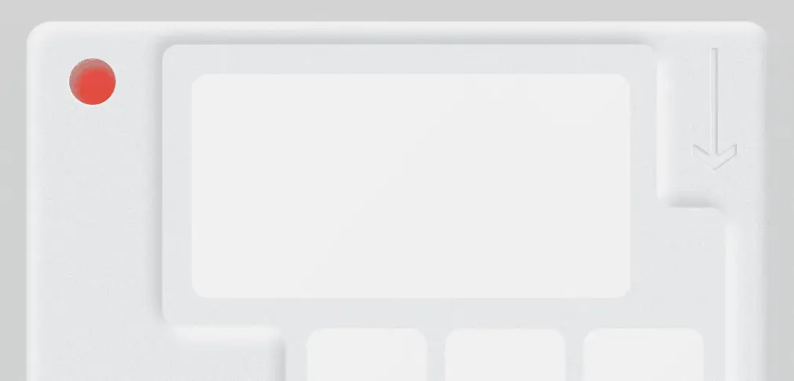

Минимализм в веб‑дизайне
Объясняем, в чём преимущества минимализма в веб-дизайне и как внедрить его на сайт, избежав ошибок. Рассказываем о принципах стиля, трендах дизайна и приводим примеры интерфейсов.
Главные принципы минималистичного веб‑дизайна
Минимализм в веб-дизайне строится на двух базовых принципах, которые делают интерфейс понятным, аккуратным и современным:
Негативное (пустое) пространство. Это свободные области страницы. Отступы между блоками, «воздух» вокруг кнопок и текста помогают пользователю сосредоточиться на главном. Такой приём повышает читаемость и делает сайт визуально лёгким.
Минимум декора. Этот ключевой принцип стиля минимализм в веб-дизайне подразумевает, что вместо множества иконок и украшений дизайнер объединяет их в простые панели, использует геометрические формы и ограниченную цветовую палитру. При этом речь не идёт об однотонности: спокойные сочетания — серого, синего, зелёного цветов — позволяют сохранить индивидуальность сайта и не перегружать восприятие.
Отдельно стоит сказать про типографику. В минимализме ценится простота: шрифты читаемые, уровни текста различимы, контраст достаточный. Распространённое мнение, что шрифты без засечек лучше для чтения, спорно: привычка играет ключевую роль. Главное — не перегружать страницу и сохранить контраст между заголовками и основным текстом.
Преимущества минимализма для сайта и бизнеса
Минимализм в веб-дизайне часто связывают с быстрой загрузкой страниц. Но на деле всё сложнее: вес сайта зависит в первую очередь от качества и размера изображений, а текст и вёрстка загружаются почти мгновенно. Большая фотография кроссовок на весь экран может грузиться дольше, но пользователь быстрее понимает, что перед ним за товар. Поэтому минимализм сам по себе не гарантирует скорости, но помогает убрать лишние элементы, которые перегружают восприятие. Можно сказать, что минимализм не про скорость загрузки, а про скорость понимания материала на сайте.
Настоящие преимущества минималистичного подхода проявляются в другом:
Долговечность дизайна. Простые формы и ограниченная палитра дольше остаются актуальными. Например, «Студия Лебедева» разрабатывает сайты так, чтобы они выглядели современно ещё через 5–10 лет. Минималистичный сайт легче «освежить» точечными изменениями — достаточно добавить новые оттенки или слегка обновить шрифт.
Снижение затрат на поддержку. Чем меньше декоративных элементов и сложных решений, тем проще адаптировать сайт под новые устройства, вносить правки или менять контент. Это экономит ресурсы бизнеса в долгосрочной перспективе.
Понятность для пользователей. Минимализм помогает убрать «визуальный шум». Когда на первом экране остаётся только главное — например, фото товара и кнопка действия. Так посетителю проще сориентироваться и совершить нужное действие.
Универсальность. Лаконичные сайты легче адаптируются к разным сферам — от интернет-магазинов до образовательных платформ. Минималистичный стиль позволяет бренду сосредоточиться на содержании и выгодах продукта, а не на визуальных «украшениях».
При этом важно понимать: сам по себе стиль минимализм в веб-дизайне не повышает конверсию и не «продаёт». Эффект достигается тогда, когда дизайн поддерживает бизнес-задачи: делает сайт удобнее, понятнее и помогает пользователю быстро найти нужную информацию.
Читайте также:
Типографика: какие задачи в дизайне решает
Разбираемся, как работает типографика и какие приёмы лучше «цепляют» внимание читателя
Тренды минимализма в современном веб-дизайне
Минимализм уже давно перестал быть просто «плоской картинкой без деталей». Современные тренды веб-дизайна показывают, что даже в рамках лаконичного стиля можно добавлять нюансы, которые делают интерфейсы живыми и удобными.
Сегодня можно выделить два основных тренда.
Микроинтеракции. Вместо сложных анимаций набирают популярность микроинтеракции — маленькие движения и отклики, которые пользователь замечает при взаимодействии с сайтом. Например, плавное появление или скрытие меню, анимация курсора или мигание указателя в текстовом редакторе. Детали кажутся незначительными, но именно они создают ощущение заботы и делают опыт использования сайта комфортнее.
Скевоморфизм 2.0. После долгих лет «плоской» эстетики пользователи начали уставать от стерильности. Так появился тренд, который дизайнеры называют скевоморфизмом 2.0 или неоморфизмом. Это элегантные эффекты, лёгкие выпуклости, мягкие градиенты и тени, добавляющие глубину элементам интерфейса. Такой приём можно назвать «анти-плоскостью»: он сохраняет минимализм, но делает его чуть теплее и человечнее.
Примеры удачных минималистичных сайтов
Успешные проекты показывают, что минимализм в веб-дизайне не ограничивается пустыми экранами и серой палитрой: он может быть строгим, но при этом живым и выразительным.
К примеру, веб-дизайнер Джордан Хьюз демонстрирует классический подход к минимализму в интерфейсах. Его работы построены на простых решениях: серые акценты, аккуратные надписи и минимум лишних элементов.
Агентство веб-дизайна Dstudio чаще работает с развлекательными макетами, но и у них встречаются проекты, выполненные в минималистичном стиле. Даже с использованием плашек композиции остаются чистыми, а интерфейсы — понятными.
Работы дизайнера из команды Creative Means показывают, как можно сочетать минимализм и выразительные детали. Приём заключается в том, что к минималистичной базе добавляется один эффектный акцент, к примеру яркая иллюстрация.
Частые ошибки — и как их избежать
Минимализм в веб-дизайне выглядит просто только на первый взгляд. На практике именно из-за стремления к лаконичности часто возникают ошибки, которые портят впечатление от сайта и снижают его эффективность. Выделили три основные ошибки, которые часто допускают дизайнеры.
Неудачный дизайн под видом минимализма. Самая частая ошибка — путать минимализм с пустотой. Когда дизайнер убирает всё ради «чистоты», но в результате интерфейс становится безликим. Пользователь не думает в терминах, он просто видит скучный сайт.
Как избежать: минимализм должен быть функциональным. Важно использовать контраст, грамотную типографику и детали вроде микроинтеракций, чтобы сайт выглядел живым, но не перегруженным.Попытка сделать минимализм универсальным решением. В веб-дизайне этот стиль подходит не для всех задач. К примеру, интернет-магазину может быть выгоднее показать больше предложений или сопутствующих товаров, чем ограничиться лишь поиском и карточкой продукта. Пользователи ценят удобство и релевантные рекомендации, а не только «воздух» и пустые экраны.
Как избежать: исходить из целей бизнеса. Минимализм хорош там, где нужно сосредоточить внимание на ключевом действии — оформить заказ, заполнить форму, прочитать текст. В e-commerce стиль лучше сочетать с функциональными блоками: рекомендациями, акциями, карточками похожих товаров.Иллюзия ценности. Ещё одна ошибка — думать, что минимализм автоматически повышает конверсию сайта. На практике пользователи реагируют не на стиль, а на удобство, скорость и понятность. Лаконичный интерфейс помогает, только если он решает задачу.
Как избежать: тестировать дизайн на реальных пользователях и измерять результат. Минимализм — не цель, а инструмент.
В итоге принципы минимализма в веб-дизайне работают только тогда, когда они поддерживают бизнес-цели и учитывают потребности аудитории. Иначе сайт рискует оказаться не «лаконичным и стильным», а просто неудобным или скучным.
Как внедрить минимализм на свой сайт
Внедрять этот стиль в веб-дизайне стоит только тогда, когда он действительно отвечает задачам бизнеса. Чтобы минимализм работал, а не превращал сайт в пустую заготовку, важно начинать с анализа контента. При редизайне важно убрать всё, что не несёт ценности для пользователя: декоративные иллюстрации, случайные элементы интерфейса, лишний текст. Необходимо оставить только то, что напрямую связано с задачей сайта: фотографии товаров, схемы, инструкции, ключевые блоки информации.
Дальше работа сводится к аккуратной настройке отступов и иерархии. В минимализме почти нет рамок и подложек, которые помогают визуально группировать элементы. Всё держится на расстояниях и логике расположения: именно они показывают, какие блоки связаны друг с другом, и делают структуру страницы читаемой.
Финальный штрих — простота визуальных решений. Минимализм не про пустоту, а про чистую и организованную подачу. Чёткая типографика, аккуратная сетка и спокойная палитра позволяют сосредоточить внимание на главном и не перегружать пользователя лишними деталями.
Минимализм в веб-дизайне — это не универсальное решение для любого проекта. Он отлично работает там, где важно сосредоточить внимание пользователя на главном, но в ряде задач может быть уместнее более насыщенный визуальный язык. Дизайнеру важно владеть разными стилями и выбирать тот, что лучше решает задачу бизнеса.
Есть и второй момент. В минимализме гораздо меньше выразительных средств: нет лишних декоративных элементов, выбор палитры ограничен, типографика лаконична. Из-за этого дизайнеру приходится думать глубже и работать аккуратнее с деталями. Чем меньше инструментов в руках, тем выше требования к качеству композиции. Например, неправильно выставленные отступы или неясная иерархия текста могут превратить чистый макет в «простыню», где элементы сливаются и теряют читаемость.
Не нужно стремиться использовать минимализм в веб-дизайне каждый раз. Лучше изучать разные приёмы, набираться опыта и вдохновляться удачными примерами. Можно сравнивать, как построены сайты — победители премий в области веб-дизайна или проекты крупных e-commerce-брендов. Перерисовка и анализ чужих решений помогут лучше понять, как минимализм работает на практике и где его границы.
Подпишитесь на сообщество Info.Jurnal
Если вам важно разобраться в цифровых профессиях и принимать решения без спешки — подпишитесь на сообщество журнала.
Подписаться